メルシーのフォカッチャ（枝豆、コーン、桜エビ、ちくわ）。
2024/07/13
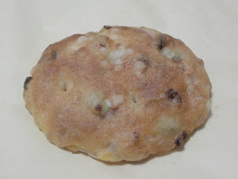
おつまみの具がいろいろ入ったフォカッチャです。
油分と塩分があるので、お酒と一緒に食べたらよく合いました。
美味しい。
島根県松江市西浜佐陀町894
2024/07/13

おつまみの具がいろいろ入ったフォカッチャです。
油分と塩分があるので、お酒と一緒に食べたらよく合いました。
美味しい。
2024/03/14
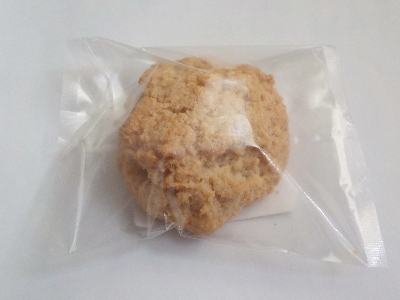
いい香りがする甘くて美味しいお菓子でした。原材料に洋酒があるので、その香りかな？
また行ったときにあったら、多分買います。
2024/02/24
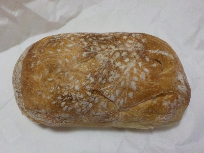
プレーンのチャバタです。外はパリパリ。中は空気の穴がいっぱいあって柔らかいですが、弾力感がありました。
味が付いてないですけど、パンの味だけで十分美味しかったです。サンドイッチにするといいみたいですが、私はこのままパンの味を楽しんで食べる方が好きかな。
2023/02/16
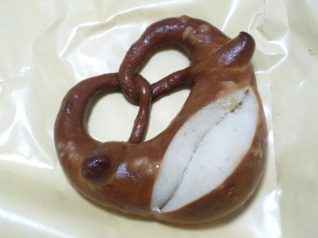
カッコいいパンです。
濃い茶色なのでとっても固そうですが、そんなことないです。
塩味が効いてるベーグルっぽい感じのパンだなと思いました。味わい深いパンでした。
2022/11/12
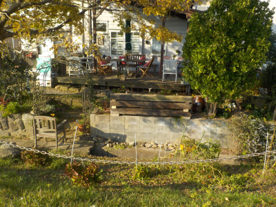
この写真では見えにくいですが、ウッドデッキにはテーブルと椅子が用意してありました。
ここでのんびりパンが食べれるといいですね。今日は他の用事があったので見るだけです。
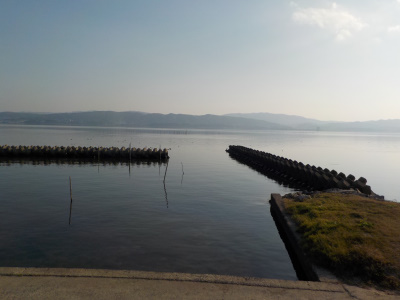
天気が良いので、すぐそばの宍道湖が眩しかったです。いい眺めでした。
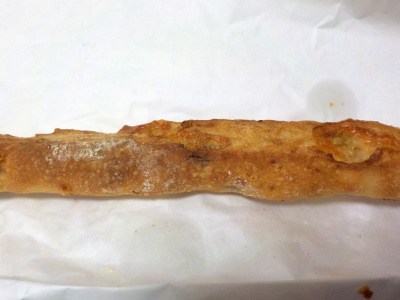
ステッキを買って帰りました。パンも味付けも美味しかったです。
お店とは関係ないですが、近くに可愛い子猫が数匹いました。近くの飼い猫？町猫？お寺の猫かな？。人のいる所に寄ってきていたので、お腹が空いてたのかな？また今度この猫が見れたらいいなと思いました。
2015/07/19
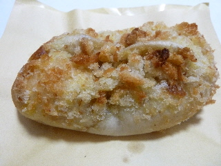
カレーの香りが強いカレーパンです。
辛いわけではないんですが、味と香りがとっても香辛料な感じでした。 なんとなく本格的な味だと思いました。 意外な感じでラッキョウが入っていました。
2009/03/14
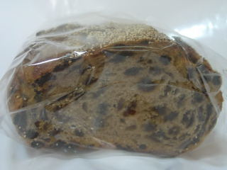
カレンズの実が沢山入ったパンです。
沢山の実が入っているだけあって、濃い味のパンでした。ちょっとすっぱいですが、クリームチーズを付けて食べると、マイルドで美味しかったです。 ちょっと贅沢なおつまみになりました。
2008/04/26
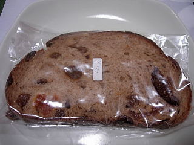
ここのパン屋さんは初めて行きました。
巨大パンって言っても、それをスライスしたものを買うので巨大なパンではないです。深みのある味でした。
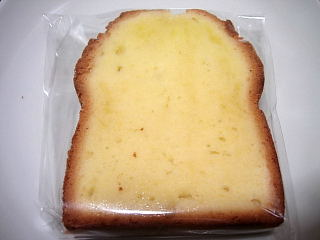
これはいっしょに買った焼き菓子っぽいものです。
ここのパン屋さんはよそのお店とは違う商品があるなって思いました。
見た目も味も独特で、どんなパンだろう？って思いながら選べて楽しかったです。
写真を撮らなかったんですが、チーズとクミンのパンがとっても美味しかったです。
カレー風味のパンなんですが、「こんな味があるんだ！」って感心してしまいました。
また松江に行くことがあったら絶対に寄って買いたいって思いました。